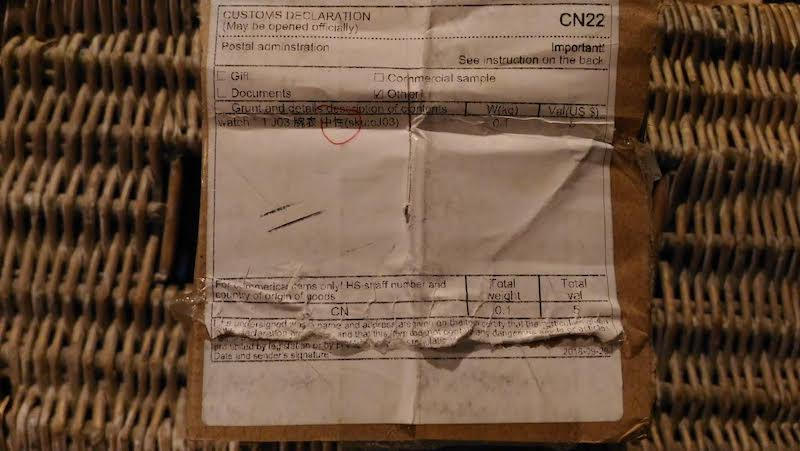

MONTRE EN BOIS THE WOODSTOCK, AVIS
On a testé les montres the wood stock, et on peux vous dire qu'on va pas être tendre

Déballage montre the woodstock
Le président des Etats-Unis, Donald Trump, a donné le ton, en saluant très vite et chaleureusement l’élection de Jair Bolsonaro, le candidat d’extrême droite qui a emporté haut la main, dimanche 28 octobre, le second tour du scrutin brésilien. Majoritaires sur le continent latino-américain, les chefs d’Etat de droite ont suivi. L’Argentin Mauricio Macri